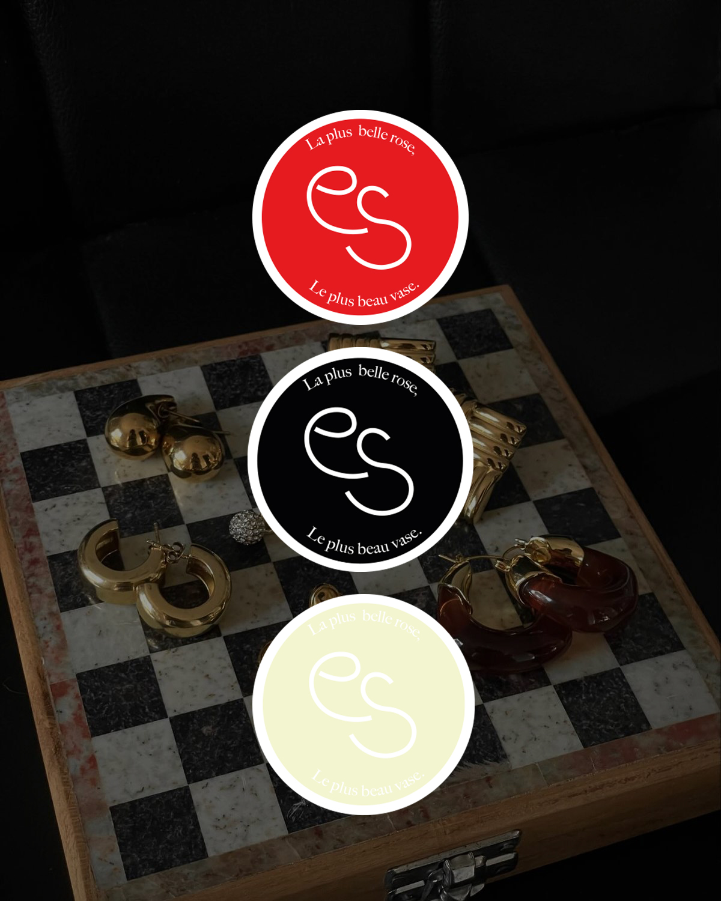

Graphisme · Identité visuelle
Bijoux
Esmiré
La couleur d’un logo est-elle vraiment importante ? Pour cette marque de bijoux qui se lance, j’ai décliné un même dessin en plusieurs couleurs, avec une intention précise : exprimer différentes émotions et facettes de son identité.
Un même logo, plusieurs façons de faire ressentir la marque.

La démarche
La couleur
fait sens.
Le brief demandait un logo décliné en plusieurs couleurs. Pas simplement pour varier les visuels : chaque version devait porter une intention différente tout en conservant le même dessin.
J’ai abordé ce travail par la sémiotique, en m’intéressant aux significations et aux associations que les couleurs peuvent évoquer dans l’univers de la marque.
Trois intentions
Un logo,
trois nuances.
Nude / beige · La seconde peau
Une palette pensée pour évoquer la douceur, la peau et l’intime. Elle exprime l’idée d’un bijou que l’on porte tous les jours, comme une seconde peau.
Rose poudré · La délicatesse
Une féminité délicate, sans tomber dans le cliché. Cette version évoque le soin, l’attention à soi et le cadeau que l’on s’offre.
Terracotta / brique · Le caractère
Une tonalité plus ancrée, plus forte et plus créative, destinée à exprimer le caractère du bijou et de celle qui le porte.

Le choix graphique
Choisir
avec intention.
Le même logo peut raconter des choses différentes selon sa couleur. Dans ce projet, chaque palette traduit une facette de la marque et une relation au bijou.
Une couleur ne se choisit pas seulement parce qu’on l’aime : elle doit servir le message que l’on souhaite transmettre.